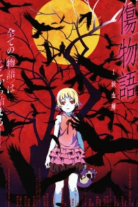

Kizumonogatari
Part 1 : Tekketsu (2016)
March 25th-just another day during spring break.
Koyomi Araragi, a second year high school student at Naoetsu High School, befriends Tsubasa Hanekawa, the top honors student at his school. Tsubasa mentions a rumor about a "blonde vampire" that has been sighted around their town recently. Koyomi, who is usually anti-social, takes a liking to Tsubasa's down-to-earth personality.
That evening, Koyomi encounters this rumored vampire: she is Kiss-shot Acerola-orion Heart-under-blade, also known as the "King of Apparitions." The blonde, golden-eyed vampire cries out for Koyomi to save her as she lies in a pool of her own blood, all four of her limbs cut off.
March 25th-just another day during spring break.
Koyomi Araragi, a second year high school student at Naoetsu High School, befriends Tsubasa Hanekawa, the top honors student at his school. Tsubasa mentions a rumor about a "blonde vampire" that has been sighted around their town recently. Koyomi, who is usually anti-social, takes a liking to Tsubasa's down-to-earth personality.
That evening, Koyomi encounters this rumored vampire: she is Kiss-shot Acerola-orion Heart-under-blade, also known as the "King of Apparitions." The blonde, golden-eyed vampire cries out for Koyomi to save her as she lies in a pool of her own blood, all four of her limbs cut off.
Part 2 : Nekketsu (2016)
In the spring of his second year of high school, Koyomi Araragi met the beautiful vampire Kiss-shot Acerola-orion Heart-under-blade. Koyomi saved Kiss-shot, who was on the verge of death with all four of her limbs cut off, but only at the expense of becoming her minion and a vampire.
"In order to go back to being a human again, you must take back all of Kiss-shot's limbs." After receiving advice from Meme Oshino, an expert in the supernatural, Koyomi prepares to go into battle.
In the spring of his second year of high school, Koyomi Araragi met the beautiful vampire Kiss-shot Acerola-orion Heart-under-blade. Koyomi saved Kiss-shot, who was on the verge of death with all four of her limbs cut off, but only at the expense of becoming her minion and a vampire.
"In order to go back to being a human again, you must take back all of Kiss-shot's limbs." After receiving advice from Meme Oshino, an expert in the supernatural, Koyomi prepares to go into battle.
Part 3 : Reiketsu (2017)
With help from Meme Oshino, the apparition specialist, Koyomi defeats the three powerful vampire hunters: Dramaturgy, Episode and Guillotinecutter.
Koyomi takes back all the limbs of Kiss-Shot-Acerola-Orion-Heart-Underblade in order to become a human again.
But, when he returns to Kiss-Shot, she reveals to him the cold truth of what it means to be a vampire-a creature of the night. Unable to take back what he has done, Koyomi feels nothing but regret and can only deny his dreadful fate. While Koyomi is struggling to face reality, his "friend" Tsubasa Hanekawa comes to him with a certain plan…
With help from Meme Oshino, the apparition specialist, Koyomi defeats the three powerful vampire hunters: Dramaturgy, Episode and Guillotinecutter.
Koyomi takes back all the limbs of Kiss-Shot-Acerola-Orion-Heart-Underblade in order to become a human again.
But, when he returns to Kiss-Shot, she reveals to him the cold truth of what it means to be a vampire-a creature of the night. Unable to take back what he has done, Koyomi feels nothing but regret and can only deny his dreadful fate. While Koyomi is struggling to face reality, his "friend" Tsubasa Hanekawa comes to him with a certain plan…